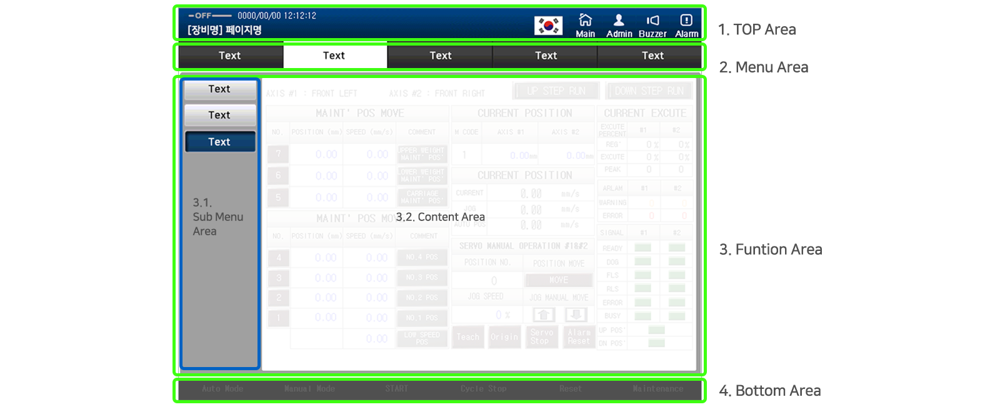
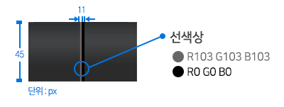
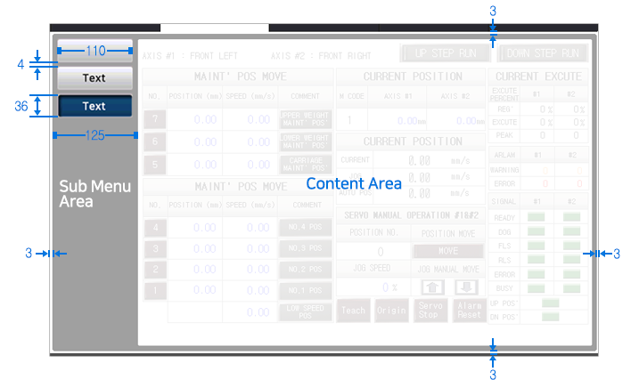

Size
top영역 사이즈는 800px*50px로 top.png 이미지 파일을 변형없이 사용합니다.
600px*480px 핸디형 프로젝트의 경우 ()로 이미지파일을 변형없이 사용함을 기본으로 합니다.

All Area
Top영역은 정해진 내용을 고정해서 사용하는 것을 원칙으로 합니다.
장비명과 페이지명, 연결상태, 일시, 필수 고정버튼(홈, 로그인, 부저, 시스템셋팅, 알람), (요청시)업체로고 등을 넣어서 사용합니다.
Top영역에 사용되는 이미지는 Download 받아 사용합니다.
top영역 사이즈는 800px*50px로 top.png 이미지 파일을 변형없이 사용합니다.
600px*480px 핸디형 프로젝트의 경우 ()로 이미지파일을 변형없이 사용함을 기본으로 합니다.
되도록 업로드된 이미지 사용을 권장합니다.
불가피한 상황시 색상값 #004080 (R0/ G64/ B128) 과 #002850 (R0/ G40/ B80) 값으로 그라데이션을 하여 사용해줍니다.
그라데이션 사용이 어려울 시 단색 #003264 (R0/ G50/ B100)을 사용합니다.
PLC 통신상태를 좌측 상단에 표시합니다.
Online-회색, Offline-밝은연두색 이미지를 이용합니다.
제목은 장비명과 페이지명을 적어줍니다.
요청이 있을 시에만 고객사 로고를 삽입하며 가능한 흰색로고를 사용합니다. 첨부되어 있지 않은 로고는 디자인 담당자 (현 박상화대리)에게 요청 부탁드립니다.
TOP Area의 우측에는 필수 고정버튼이 배치되며 Main, Admin, Buzzer, System, Alarm이 이에 해당됩니다.
메뉴 영역은 TOP 영역 아래 배치하며 평상시 짙은회색 그라데이션 버튼을 사용하며, 활성화시 흰색배경에 짙은회색 font로 표현을 기본으로 합니다.
대메뉴 기본 배치는 1. 장비에 관련된 버튼 나열 (조작/설정) 2.모니터링 (현황-데이터) 4.장비 세팅 5. 외 추가 버튼들의 순서로 배열하는 것을 규칙으로 합니다.
1. Operation : 첫번째 버튼 장비 조작에 관련된 버튼을 배치해줍니다.
Auto, Semi Auto, Manual, Teach 등 PLC 장비 조작과 관련된 Operator, Operte 등 유사 용어는 Operation으로 사용하는 것을 기본 원칙으로 하지만 업체 요청이나 상황에 따라 변경하여 사용 가능합니다.
2. Data : 공정 데이터에 설정화면을 표시합니다.
Recipe, BCR, RFID, Vision, Servo 등등 하위메뉴를 포함하여 사용합니다. Data관련 내용이 없을 경우 삭제합니다.
3. Monitor : 실시간모니터링 화면을 표시합니다.
Monitoring, Status, I/O 등 실시간 데이터 관련 내용을 표시하며 명칭은 Monitor로 통일하여 사용합니다.
4. Log : History, Log 정보를 보여줍니다. 명칭은 Log로 통일하여 사용합니다.
5. Setting : 장비 Setting에 관련된 내용을 작성합니다. 필수고정버튼에 있는 Setting 버튼에는 장비와 관련없는 언어, 계정등 세팅값을 작성하는 페이지로 꼭 구분하여 사용합니다.

버튼 높이는 45px로 평상시는 Menu_en.png을 사용하며 press상태에서는 menu_prs.png를 사용합니다.
버튼 이미지 파일 크기 조절은 가로로만 늘리거나 줄여서 사용합니다. 세로 크기는 45px 고정입니다. (800*600 기준)
버튼과 버튼 사이에는 선을 주어 구분하여 사용합니다. (우측 이미지 참고)
버튼을 다 배치한 후 그위에 회색선과 검정색선 두개를 가로 1px, 세로 45px로 그어 버튼 사이에 올려 구분해 줍니다.
설비군별 대메뉴 작화 샘플은 아래 버튼을 다운받아 사용가능합니다.

Function Area에는 레이아웃 및 내용을 작성하는 공간을 말합니다.
Function 영역
Submenu가 없을시 흰 바탕에 회색 박스와 흰박스를 올리지않고 그대로 사용하고, Submenu 활용시 좌측 그림과 같이 사이즈에 맞추어 사용하거나 최다한에 샘플을 다운로드하여 그대로 붙여넣어 사용합니다.
· 회색 배경 박스 = 794 * 464 px R160 G160 B160
= Function 크기 800*470 - 양쪽 여백 3px씩
· Sub Menu 버튼크기 = 110 * 36 px
bt_submenu_en.png, bt_submenu_prs.png를 변경없이 그대로 사용합니다.